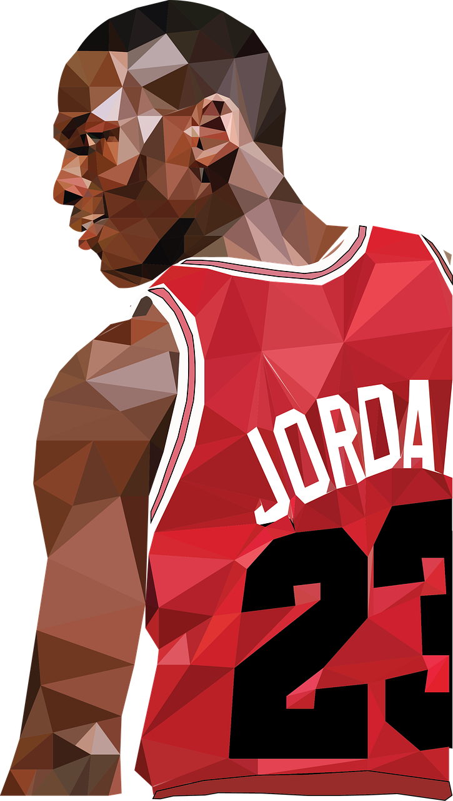
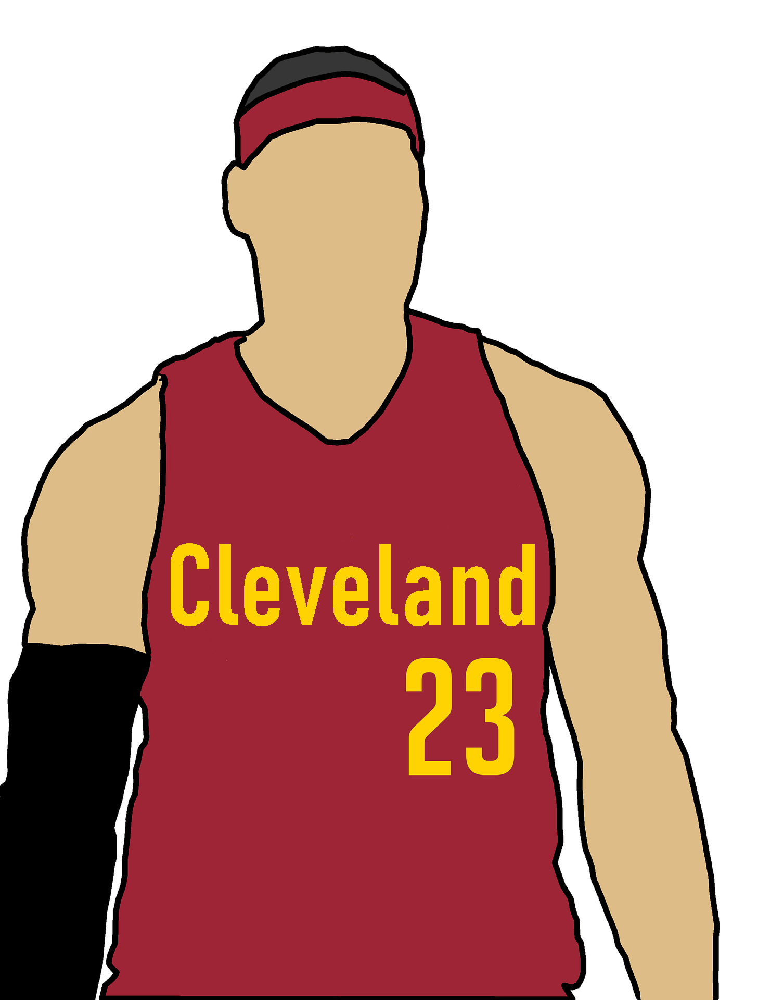

1 Michael Jordan

Michael is considered on of the "G.O.A.T's" of basketball. He is well known for his finals record of 6-0, his 1986-87 season where he averaged 37.1 points, and his overall dominant and flashy style of basketball.
Michael Jordan Twitter 2 Lebron James

Lebron James, like Michael Jordan, is considered one of the greatest. He is very well known for his performance in the 2016 finals, where the Caveliers cameback from a 1-3 deficit and sent Golden State home.
Lebron James Twitter 3 Kareem Abdul-Jabbar

Kareem Abdul-Jabbar is another one of the Greats, who played in an era before either of the other two. One of Kareems greatest accomplishments is his seemingly unbeatable record of 38,387 points.
Kareem Abdul-Jabbar Twitter